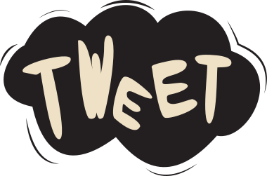

The Context
Coca Cola, une marque active et créative
Au fils des années l’entreprise Coca Cola a façonné son image et sa notoriété à grand coup de campagnes publicitaires de grande ampleur, marquantes par leur originalité et par la qualité des réalisations.
Au fils des siècles la marque a par ailleurs souvent fait appel à des artistes et designers de renom pour réaliser des concepts visuels encore gravés dans les esprits.
Aujourd’hui Coca Cola cherche à poursuivre cette tradition de campagnes innovantes et créatives en prenant en compte les nouveaux enjeux de 2012 et en particulier le canal internet.
La marque cherche en particulier à s’adresser à une cible jeune, sensible aux innovations digitales, pour renforcer sa notoriété et son image de marque innovante.

Une marque active et créative en terme de campagne de communication :
•Des thèmes récurrents dans la communication Coca Cola : l’émerveillement, le rêve, le merveilleux
•Un lien fort entre la marque (campagnes, packaging, logo) et l’art
•Une marque qui s’adresse à une cible plutôt jeune, par conséquent sensible au digital et à l’innovation de manière générale
Image :
Entretenir et renforcer l’image d’une marque jeune et innovante, proche des milieux artistiques et active dans le domaine du digital.
Notoriété :
Entretenir la notoriété de la marque sur les réseaux sociaux et en particulier sur Twitter.

Social Coke
Social Coke est une (fausse) campagne digitale à l’échelle internationale pour la marque Coca Cola, basée sur un concept innovant de site web collaboratif avec Twitter. Le site plonge ses internautes dans une expérience riche, captivante, amusante où ils pourront découvrir différents modules à base de jeux ou de contenus dynamiques.
The Context
Coca Cola, une marque active et créative
Au fils des années l’entreprise Coca Cola a façonné son image et sa notoriété à grand coup de campagnes publicitaires de grande ampleur, marquantes par leur originalité et par la qualité des réalisations.
Au fils des siècles la marque a par ailleurs souvent fait appel à des artistes et designers de renom pour réaliser des concepts visuels encore gravés dans les esprits.
Aujourd’hui Coca Cola cherche à poursuivre cette tradition de campagnes innovantes et créatives en prenant en compte les nouveaux enjeux de 2012 et en particulier le canal internet.
La marque cherche en particulier à s’adresser à une cible jeune, sensible aux innovations digitales, pour renforcer sa notoriété et son image de marque innovante.
Une marque active et créative en terme de campagne de communication : •Des thèmes récurrents dans la communication Coca Cola : l’émerveillement, le rêve, le merveilleux
•Un lien fort entre la marque (campagnes, packaging, logo) et l’art
•Une marque qui s’adresse à une cible plutôt jeune, par conséquent sensible au digital et à l’innovation de manière générale
Image : Entretenir et renforcer l’image d’une marque jeune et innovante, proche des milieux artistiques et active dans le domaine du digital. Notoriété : Entretenir la notoriété de la marque sur les réseaux sociaux et en particulier sur Twitter.
The Idea
Campagne digitale pour Coca Cola
Le site propose aux internautes de découvrir un vaste univers très illustré. Au cœur de cet univers se trouve une bouteille dont les formes se dessinent peu à peu avec les noms des internautes qui tweet avec le # de la campagne (#socialcoke). Le but premier de cette page est donc d’inciter les internautes à parler de la marque. Ils ont par ailleurs la possibilité de le faire directement depuis la page d’accueil.
Quel intérêt pour l'internaute ?
Lorsque l’internaute se rend sur le site, il plonge au coeur d’un univers graphique qui capte sa curiosité et son émerveillement. On s’appuie ainsi sur une constante de la communication Coca Cola, à savoir la place primordiale qu’occupent l’émerveillement et l’émotionnel.
Plus concrètement, l’interaction de l’internaute avec le site se fait principalement sur la base du tweet. Pour chaque tweet posté avec #socialcoke, le pseudo de l’internaute vient compléter le design de la bouteille. Il apparaît alors directement sur la bouteille et découvre un peu plus de sa forme.
Par ailleurs, les tweets ont une seconde fonction dans notre campagne. Ils permettent de construire l’univers Coca Cola autour de l’événement principal. Les internautes prennent ainsi partie à la construction de l’univers « décalé » qui se dessine peu à peu.
The Universe
Propose à l’internaute une expérience riche, captivante et amusante
Cet univers entourant la bouteille présente la marque Coca Cola sous l’angle de l’art. Il est composé à la manière d’une infographie, présentant des historiques graphiques de la marque, l’évolution de son design, ou encore la forme de ses bouteilles au fil des années, le tout présenté de manières ludique.
L’univers est volontairement très illustré, sans cadre défini pour laisser une très grande liberté à la navigation de l’internaute.
Un soin particulier a été accordé aux détails dans les illustrations, les animations et tous autres rendus visuels qui permettent d’attiser, la curiosité et l’enthousiasme du visiteur.
Et quand la bouteille est pleine ?
La campagne se termine lorsque la bouteille est pleine. Pour autant tout ne s’arrête pas là. Il s’agit de remercier les participants et de profiter de la plus grande notoriété du site.
La bouteille sera donc réellement produite sous forme d’une nouvelle édition collector "Socialbottle". Elle sera offerte aux participants à la campagne et une possibilité sera donnée aux internautes de la commander sur le site.
Le site sera par ailleurs disponible dans son intégralité. Les visiteurs pourront donc profiter pleinement de l’expérience, à la manière d’une infographie présentant les liens forts entre Coca Cola et le monde de l’art.